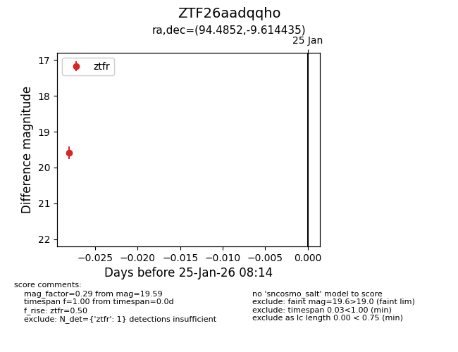
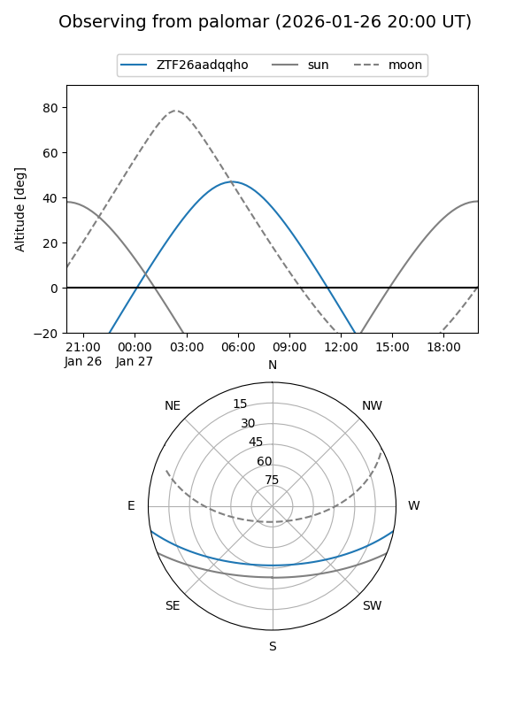

ZTF26aadqqho
Target ZTF26aadqqho at 2026-01-25 08:16
Aliases and brokers:
FINK: link
Lasair: link
ALeRCE: link
alt names
ZTF26aadqqho (ztf,fink_ztf)
Coordinates:
equatorial (ra, dec) = 94.4852,-9.61444
equatorial (HMS+DMS) = 06:17:56.44,-09:36:51.97
galactic (l, b) = (217.8052,-11.76826)
Flags:
Photometry:
last ztfr=19.59
1 ztfr detections
Lightcurve

Visibility


Additional plots